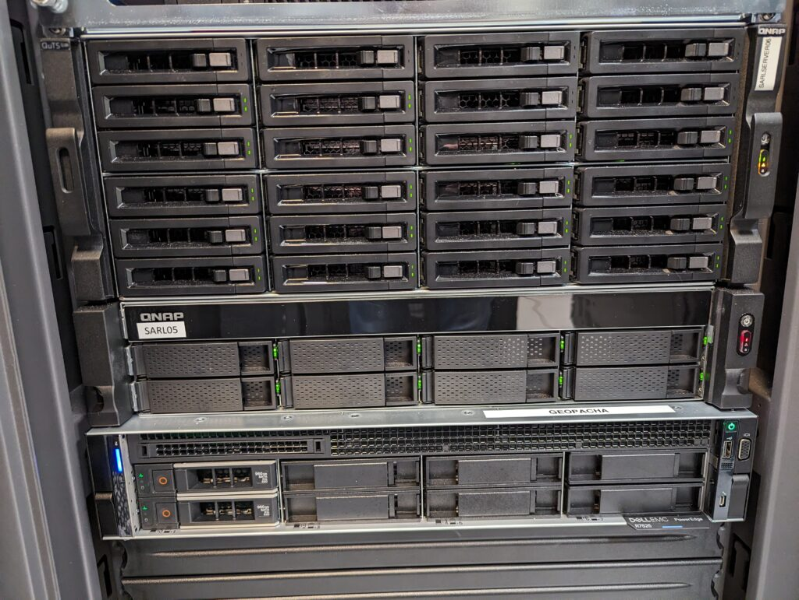

Facilities & Equipment
Access and Hours of Use
SARL is located in 328 Garland Hall. The SARL door is locked at all times. Access is VU card swipe, which is arranged by the director. The lab can be accessed 24/7. Note that the exterior doors to the building are locked in the evening, but users can enter the building via Vanderbilt ID card swipe through the library lawn entrance to Garland Hall
Hardware
SARL houses 12 workstations, including advanced systems with up to 384 GB of RAM, high end GPUs, and dual CPU configurations.
SARL maintains servers in the Hill Center, Vanderbilt's enterprise computational facility. They are connected to the campus network via 10GBS fiber.
SARL servers include:
- 24 bay 4U rack server with 256TB of RAID6 storage
- 8-Bay 1U rack server with 144 TB of RAID5 storage
- Dell PowerEdge R 7525 with dual AMD 7313 16 core processors, 32 GB RAM, and 2 x 2 TB SSD (RAID1).
Data is backed up nightly.

Field Equipment
Tablets
8 iPad Pros
1 Android tablet
Total Station
Nikon NPL-322
2 Prisms (1 large, 1 peanut)
Prism poles
Tripods
RTK GNSS/DGPS
Sokkia GRX2 base and rover
Topcon FC-500 data collector
Emlid Reach RS (4 units)
Emlid Reach RS2 (2 units)
Trimble Geoexplorer XT (1)
Geophysical Survey
GSSI Utility Scan Ground Penetrating Radar
Bartington Fluxgate gradiometer
UAVs/Drones
DJI Phantom 4
DJI Phantom 4 Pro
DJI Mavic Pro
DJI Air 3s
DJI Mini 3
Portable XRF Analyzer
Software
ESRI ArcGIS Desktop · ESRI ArcGIS Pro · QGIS · GRASS · Google Earth Pro · Autodesk AutoCAD · Agisoft Metashape · Cloud Compare · Trimble Pathfinder Office · R/RStudio · MS Office · Adobe Creative Cloud